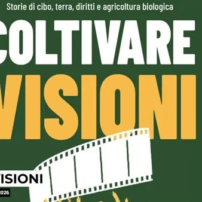

da ven 25 set a ven 13 nov
Coltivare Visioni
dal 25 settembre 2026 al 13 novembre 2026 Visionario Un viaggio dentro i sistemi agroalimentari, per scoprire come le nostre scelte di produzione e consumo incidono su ambiente, salute e persone. Tre documentari, tre sguardi sul presente, per chiederci: che cosa e come vogliamo…
 Indicazioni
Indicazioni
- Costi e prenotazioni
- Costo non indicato · Prenotazione non indicata
- Programma
- Programma da verificare. Apri la fonte ufficiale per orari e possibili aggiornamenti.
- In caso di maltempo
- Nessuna indicazione specifica pubblicata.
- Note
- Acquisito automaticamente dalla fonte.
L’EVENTO
Descrizione completa
Un viaggio dentro i sistemi agroalimentari, per scoprire come le nostre scelte di produzione e consumo incidono su ambiente, salute e persone. Tre documentari, tre sguardi sul presente, per chiederci: che cosa e come vogliamo produrre e comunare? Quale futuro vogliamo coltivare? Coltivare visioni è una rassegna cinematografica itinerante promossa da AIAB FVG che attraversa il Friuli Venezia Giulia per riflettere sui temi dell’agricoltura biologica, del cibo, dell’ambiente e dei diritti. Attraverso lo sguardo del cinema documentario, l’iniziativa approfondisce le criticità e le prospettive dei sistemi agroalimentari contemporanei, proponendo l’agricoltura biologica come una visione strategica per tutelare la salute, la biodiversità e i territori. Andando oltre la semplice proiezione, ogni tappa si trasforma in un momento aperto di dibattito e confronto tra cittadini, agricoltori, ricercatori e realtà locali, integrando la narrazione dei film con le esperienze concrete di chi lavora sul territorio per costruire un futuro alimentare più equo e sostenibile. Ecco i film che sarano in scena: Un viaggio dentro i sistemi agroalimentari, per scoprire come le nostre scelte di produzione e consumo incidono su ambiente, salute e persone. Tre documentari, tre sguardi sul presente, per chiederci: che cosa e come vogliamo produrre e comunare? Quale futuro vogliamo coltivare? Coltivare visioni è una rassegna cinematografica itinerante promossa da AIAB FVG che attraversa il Friuli Venezia Giulia per riflettere sui temi dell’agricoltura biologica, del cibo, dell’ambiente e dei diritti. Attraverso lo sguardo del cinema documentario, l’iniziativa approfondisce le criticità e le prospettive dei sistemi agroalimentari contemporanei, proponendo l’agricoltura biologica come una visione strategica per tutelare la salute, la biodiversità e i territori. Andando oltre la semplice proiezione, ogni tappa si trasforma in un momento aperto di dibattito e confronto tra cittadini, agricoltori, ricercatori e realtà locali, integrando la narrazione dei film con le esperienze concrete di chi lavora sul territorio per costruire un futuro alimentare più equo e sostenibile. 25 settembre ore 19.30
Bread: An Everyday Miracle
di Harald Friedl
Austria/Germania 2021, 94’ Il pane come simbolo universale del nutrimento. Un viaggio nella filiera del grano tra produzione industriale e artigianale, che invita a riflettere su qualità e salubrità, fitofarmaci, biodiversità e valore del tempo nella produzione alimentare. Intervengono: Stefano Poser (medico e viticoltore biologico, az. Sassocorno di Corno di Rosazzo), Gabriele Tavano (Az. FriulBios di Lestizza), Cristina Micheloni (AIAB FVG) 9 ottobre ore 19.30
How to Feed the Planet
di Francesco De Augustinis
Italia 2026, 73’ Un’inchiesta globale alla ricerca di una risposta a una delle sfide più urgenti del nostro tempo: come nutrire una popolazione mondiale in crescita senza esaurire le risorse della Terra.
Un viaggio attraverso territori e conflitti che mostra quanto la lotta per la terra e il cibo sia legata agli equilibri geopolitici contemporanei. Intervengono: Davide De Munari (az. agr. De Munari di San Vito al Tagliamento e presidente Rete BioMela FVG), Kaspar Nickles (Az. agrituristica Tiere Viere di Moggio Udinese), Cristina Micheloni (AIAB FVG) 13 novembre ore 19.30
The Pickers
di Elke Sasse
Germania 2024, 80’ Un reportage sul lavoro dei braccianti e dei migranti nella raccolta di frutta e verdura in Italia e in Europa. Un racconto che mette al centro condizioni di lavoro, sfruttamento e dignità delle persone, ricordando che non può esserci una filiera davvero sostenibile senza diritti. Intervengono: Paolo Attanasio (giornalista referente del Centro Studi e Ricerche IDOS per il FVG), Antonio Bassan (Az. agr. Bassan Pietro di Latisana), Daniele Cocetta (AIAB FVG)
Biglietto €5 Per maggiori informazioni sulla programmazione consultare il sito www.visionario.movie oppure facebook.com/VisionarioUdine
IL PROGRAMMA
Programma e orari
Appuntamenti raccolti dalle fonti elencate. Dove manca un orario, non è ancora disponibile in questa scheda.
Programma pubblicato
- Dal 2026-09-25 al 2026-11-13
INFORMAZIONI UTILI
Prima di partire
- Controllare la fonte prima di partire.
ORGANIZZAZIONE